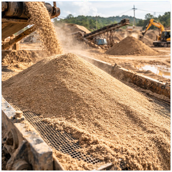
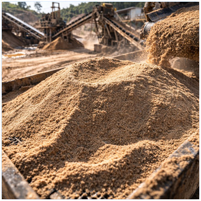
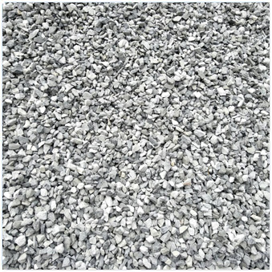
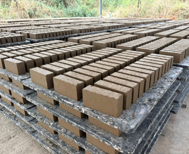
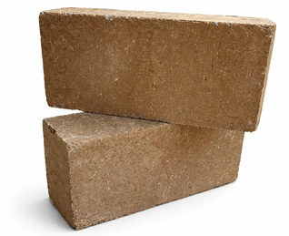
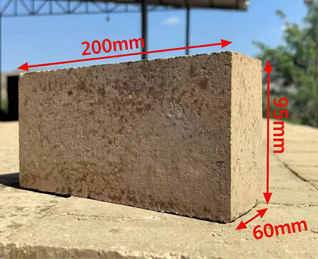

ฝุ่นหินของเรามีคุณสมบัติโดดเด่นในด้านการเติมเต็มช่องว่างและบดอัดได้แน่นเป็นพิเศษ เหมาะสำหรับงานถมปรับระดับพื้นฐาน งานรองพื้นทาง และใช้เป็นส่วนผสมในงานคอนกรีต ด้วยกำลังการผลิตที่สม่ำเสมอและมั่นคง เราจึงพร้อมรับประกันการส่งมอบสินค้าอย่างต่อเนื่องให้แก่ลูกค้าคู่สัญญาระยะยาวทุกประเภท


ทรายผลิตของเราส่งตรงจากแหล่งเหมืองของตนเอง สามารถควบคุมคัดขนาด (Grading) และคุณภาพให้คงที่ได้มาตรฐาน ผ่านกระบวนการผลิตและคัดแยกด้วยเทคโนโลยีที่ทันสมัย เพื่อให้ได้ทรายที่สะอาด ปราศจากสิ่งเจือปนและดินปนเปื้อน จึงเป็นตัวเลือกที่ดีที่สุดสำหรับแพล้นปูนและงานโครงการสาธารณูปโภคต่าง ๆ
เราจำหน่ายหินก่อสร้างคุณภาพสูงครบวงจร ทั้ง หิน 3/8 (หินเกล็ด) และ หิน 3/4 (หิน 1) ด้วยข้อได้เปรียบจากการมีเหมืองหินเป็นของตนเอง เราจึงมั่นใจได้ว่าหินทุกคันรถมีขนาดที่แม่นยำ (Standard Grading) มีความแข็งแกร่งสูง และสะอาดไร้สิ่งเจือปน ไม่ว่าจะนำไปใช้ในงานชิ้นส่วนสำเร็จรูปที่ต้องการความละเอียด หรือโครงสร้างคอนกรีตที่ต้องการกำลังอัดสูง ผลิตภัณฑ์ของเราจะช่วยเพิ่มความทนทานให้กับงานวิศวกรรมของคุณได้อย่างสูงสุด
(1) 5.00 - 10.00 mm.
(2) 10.00 - 30.00 mm.

ผลิตภัณฑ์ทรายและหินก่อสร้างของเรานำไปใช้งานได้อย่างหลากหลาย ทั้งงานก่อสร้างอาคาร, งานถนน, แพล้นปูน (คอนกรีตผสมเสร็จ), งานถมพื้นฐาน และงานสาธารณูปโภคต่าง ๆ ไม่ว่าจะเป็นการจัดส่งเพียงรถเดียวหรือการจัดหาโครงการขนาดใหญ่ เราพร้อมมอบราคาส่งหน้าโรงงานที่โปร่งใสและยุติธรรมให้แก่ลูกค้าทุกท่าน
นวัตกรรมอิฐรักษ์โลกที่ออกแบบมาเพื่อการก่อสร้างยุคใหม่โดยเฉพาะ ด้วยคุณสมบัติเด่นในการป้องกันความร้อนและดูดซับเสียงได้อย่างดีเยี่ยม ช่วยให้บ้านเย็นสบายและเงียบสงบยิ่งขึ้น เนื้ออิฐมีความแข็งแกร่งทนทานต่อทุกสภาพอากาศ ไม่แตกหักง่าย รองรับการใช้งานได้ทั้งภายในและภายนอก มั่นใจด้วยคุณภาพมาตรฐานระดับสากลในราคาที่คุ้มค่าที่สุด ส่งตรงจากเหมืองและโรงงานผลิตของเราเอง



นอกจากนี้ เรายังจำหน่ายอิฐรักษ์โลกคุณภาพสูงที่ผ่านการรับรองจาก คณะวิศวกรรมศาสตร์ มหาวิทยาลัยเชียงใหม่ โดยผลการทดสอบยืนยันความแข็งแกร่งด้วยค่า แรงต้านทานการรับน้ำหนักสูงสุดเฉลี่ยกว่า 18.29 MPa และมีอัตราการดูดซึมน้ำต่ำเพียง 8.6% พร้อมบริการทรายและหินบดส่งตรงจากเหมืองของเราใน จ.ลำพูน เพื่อให้ลูกค้าได้ต้นทุนต่ำที่สุดในราคาหน้าโรงงานครับ